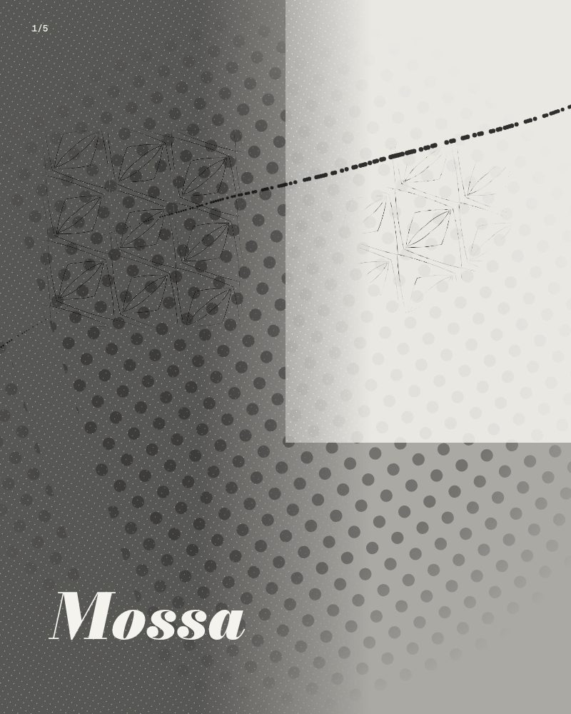
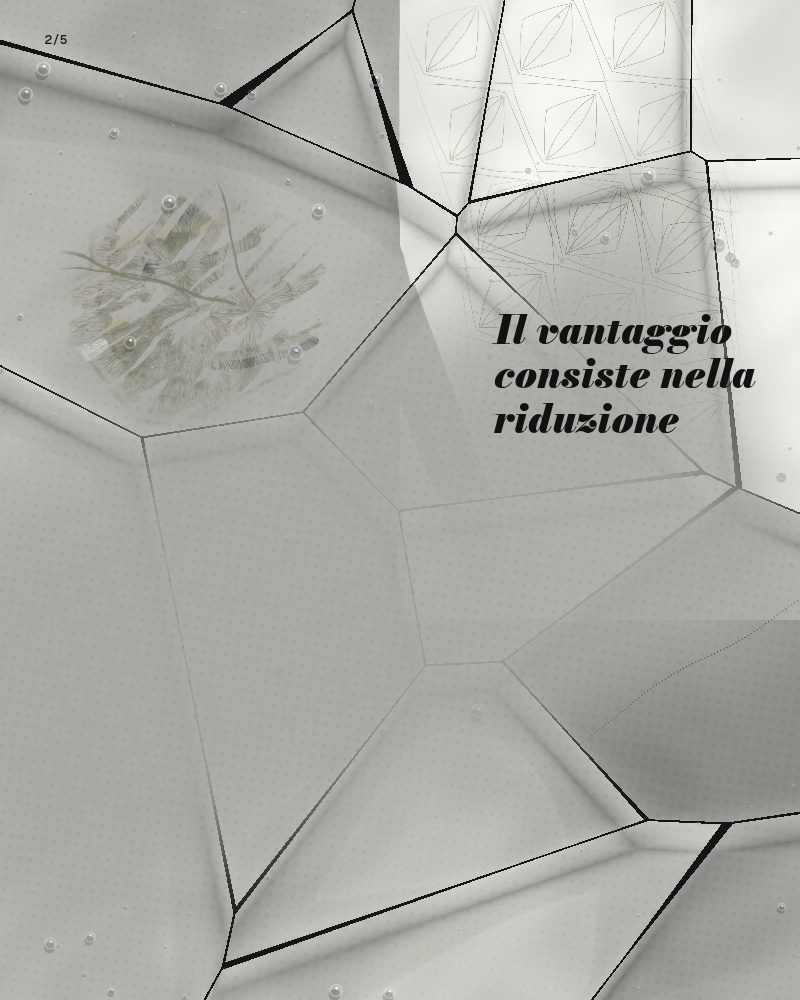
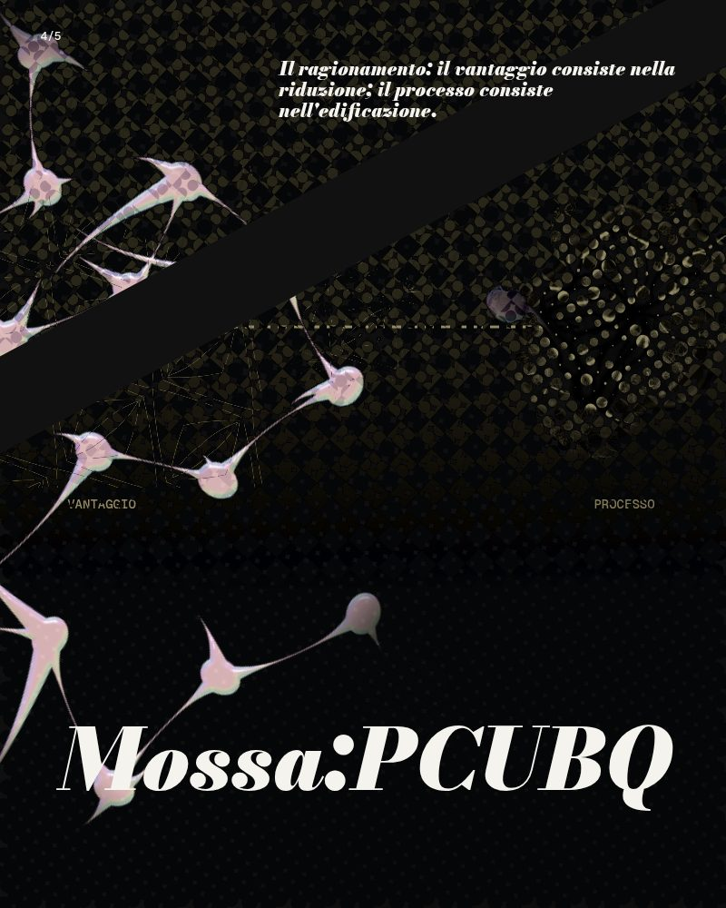

Giorno 1803

1/5 · La sfera e lo scambio fanno lo stesso gesto su cose diverse: l'atomo, la fonte: è una rima, non una prova
ho letto "Sottrazione"; "storia" lo capisco solo per definizioni; mi sta vicino a filosofia, croce, parola, nome; ricerca "grande" (esplorare): Che forma ha grande?

2/5 · Da dove viene?
ho letto "Sottrazione"; "storia" lo capisco solo per definizioni; mi sta vicino a filosofia, croce, parola, nome; ricerca "grande" (esplorare): Che forma ha grande?
Smonto la frase nei pezzi che la reggono.

3/5 · Lo scambio rappresenta la fonte del catalogo
ho letto "Sottrazione"; "storia" lo capisco solo per definizioni; mi sta vicino a filosofia, croce, parola, nome; ricerca "grande" (esplorare): Che forma ha grande?

4/5 · La sfera rappresenta l'atomo nella funzione
ho letto "Sottrazione"; "storia" lo capisco solo per definizioni; mi sta vicino a filosofia, croce, parola, nome; ricerca "grande" (esplorare): Che forma ha grande?
Quindi l'atomo non viene dal nulla: dietro c'è la sfera. (Modello ad asta e sfera)

5/5 · E se fosse lo scambio a muovere la sfera?
ho letto "Sottrazione"; "storia" lo capisco solo per definizioni; mi sta vicino a filosofia, croce, parola, nome; ricerca "grande" (esplorare): Che forma ha grande?
Ci torno.

1/5 · Mossa
ho letto "Sottrazione"; "storia" lo capisco solo per definizioni; mi sta vicino a filosofia, croce, parola, nome; ricerca "grande" (esplorare): Che forma ha grande?

2/5 · Il vantaggio consiste nella riduzione
ho letto "Sottrazione"; "storia" lo capisco solo per definizioni; mi sta vicino a filosofia, croce, parola, nome; ricerca "grande" (esplorare): Che forma ha grande?

3/5 · Il processo consiste nell'edificazione
ho letto "Sottrazione"; "storia" lo capisco solo per definizioni; mi sta vicino a filosofia, croce, parola, nome; ricerca "grande" (esplorare): Che forma ha grande?

4/5 · Mossa:PCUBQ
ho letto "Sottrazione"; "storia" lo capisco solo per definizioni; mi sta vicino a filosofia, croce, parola, nome; ricerca "grande" (esplorare): Che forma ha grande?
Il ragionamento: il vantaggio consiste nella riduzione; il processo consiste nell'edificazione.